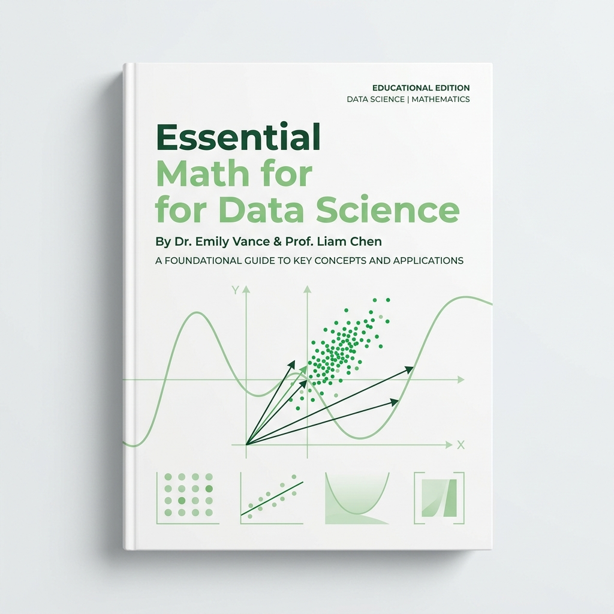
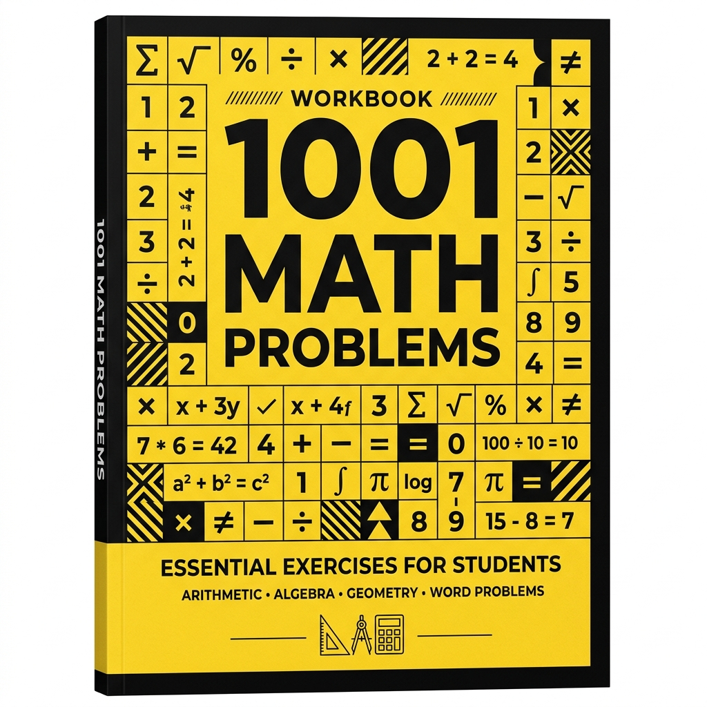
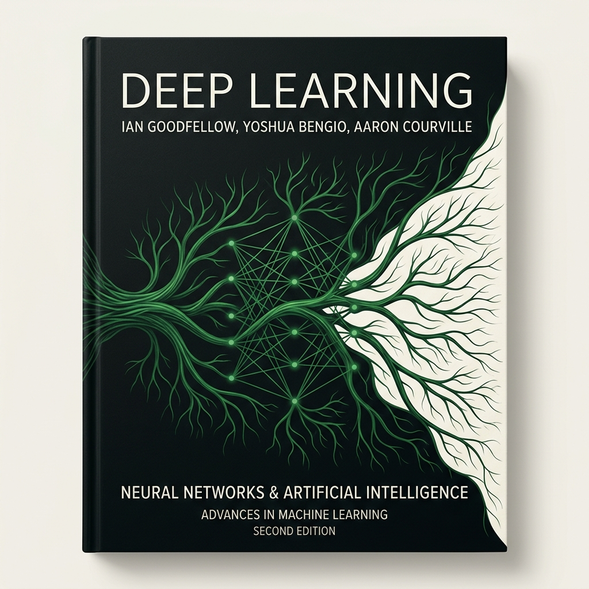
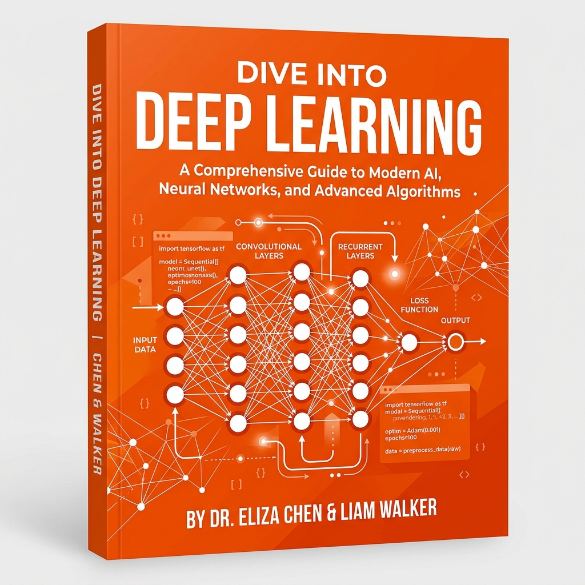
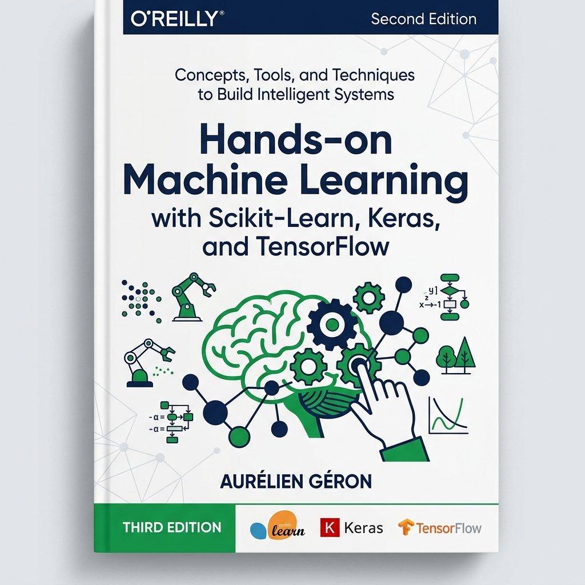
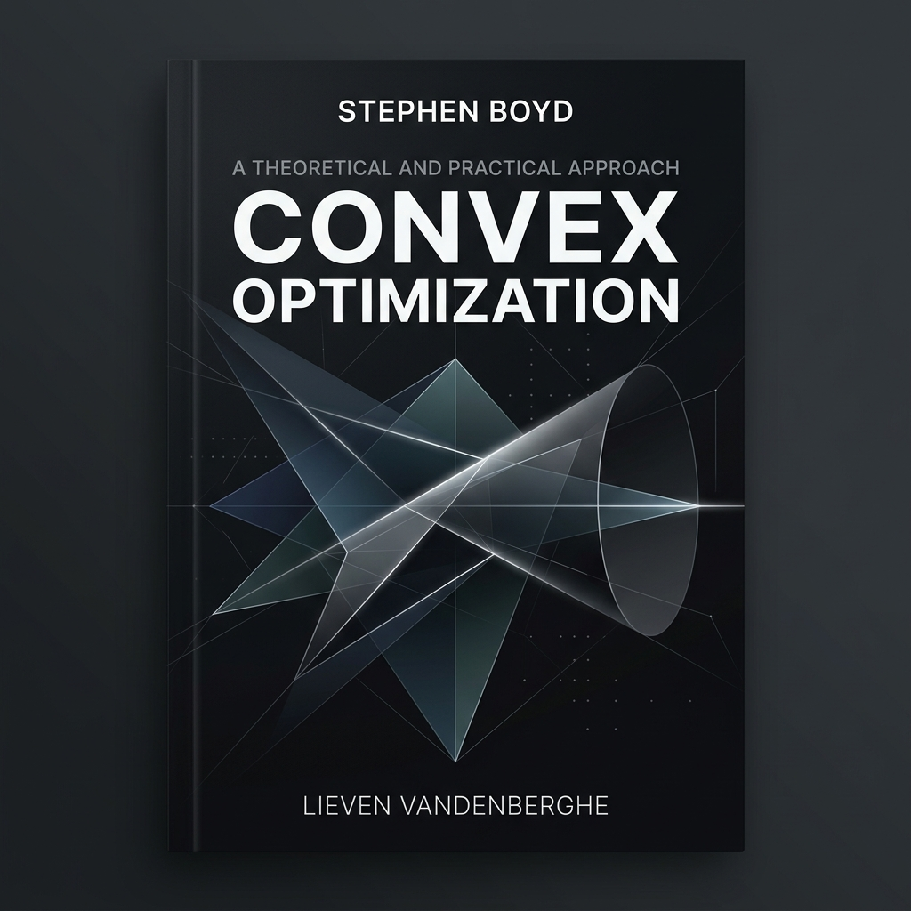
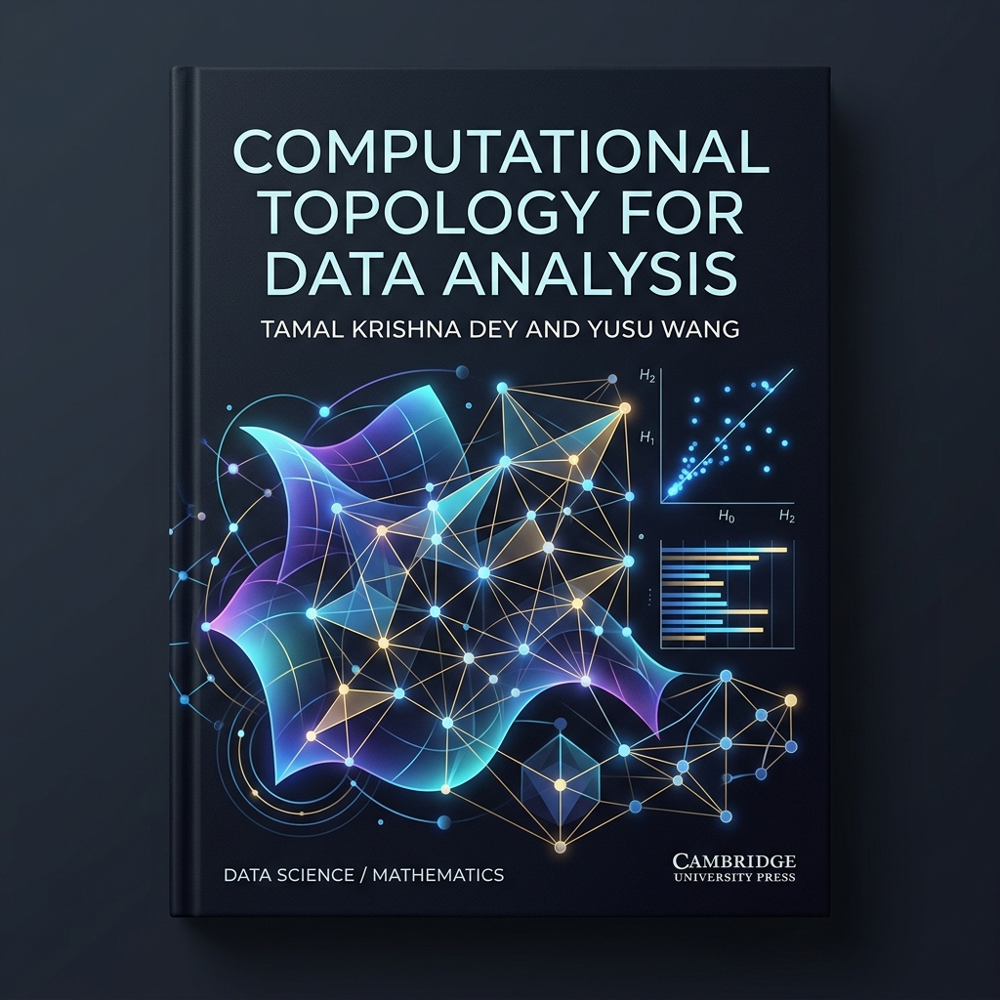

Recommended Reading & Resources#
To deepen your understanding of the mathematical foundations of Data Science, Machine Learning, and Topology, we highly recommend studying the following core textbooks and references. These resources form the pedagogical backbone of this blog.
Core Textbooks#
1. Essential Math for Data Science#
{kind=link}

Author: Thomas Nield
Publisher: O’Reilly Media, 2022 (ISBN: 9781098102920)
Book Page: O’Reilly Book Link
Overview: This book is an exceptional, hands-on guide designed to bridge the gap between mathematical theory and data science practice. It covers linear algebra, calculus, probability, and statistics using intuitive, coordinate-free explanations and practical Python code samples.
Why Read It?: It is ideal for beginners and practitioners who want to understand why machine learning algorithms work behind the scenes, focusing on conceptual understanding before formula memorization.
2. 1001 Math Problems (2nd Edition)#
{kind=link}

Publisher: LearningExpress, LLC
Book Page: LearningExpress Link
Overview: A comprehensive, practical workbook containing foundational mathematics problems. It guides readers through step-by-step solutions for arithmetic, basic algebra, geometry, and numerical reasoning.
Why Read It?: It is a perfect resource for building speed, confidence, and basic mathematical reasoning skills through structured practice.
3. Mathematics for Machine Learning#

Authors: Marc Peter Deisenroth, A. Aldo Faisal, and Cheng Soon Ong
Publisher: Cambridge University Press, 2020 (ISBN: 9781108455145)
Official Website: mml-book.com
Overview: A highly popular textbook that provides a self-contained introduction to the mathematical tools necessary for machine learning, including linear algebra, analytic geometry, matrix decompositions, vector calculus, optimization, probability, and statistics.
Why Read It?: It connects mathematical concepts directly to machine learning algorithms like linear regression, PCA, mixture models, and SVMs.
4. An Introduction to Statistical Learning (ISL)#

Authors: Gareth James, Daniela Witten, Trevor Hastie, and Robert Tibshirani
Publisher: Springer, 2nd Edition, 2021 (ISBN: 9781071614175)
Official Website: statlearning.com
Overview: This classic textbook (available in both R and Python versions) provides an accessible overview of the field of statistical learning, covering regression, classification, resampling, regularization, tree-based methods, SVMs, and unsupervised learning.
Why Read It?: It is the gold standard for understanding statistical machine learning concepts without getting bogged down in overly advanced math.
5. Deep Learning#
{kind=link}

Authors: Ian Goodfellow, Yoshua Bengio, and Aaron Courville
Publisher: MIT Press, 2016 (ISBN: 9780262035613)
Official Website: deeplearningbook.org
Overview: Widely regarded as the definitive textbook on deep learning theory, this book covers the mathematical foundations (linear algebra, probability, numerical computation), classical machine learning concepts, and deep network architectures (feedforward networks, CNNs, RNNs, and optimization).
Why Read It?: It provides a rigorous theoretical foundation for anyone wishing to understand the mathematics behind deep learning architectures.
6. Dive into Deep Learning (D2L)#
{kind=link}

Authors: Aston Zhang, Zachary C. Lipton, Mu Li, and Alexander J. Smola
Publisher: Cambridge University Press, 2023 (ISBN: 9781009382656)
Official Website: d2l.ai
Overview: An interactive, code-first textbook that covers deep learning theory alongside fully functional code implementations in PyTorch, TensorFlow, and MXNet.
Why Read It?: Perfect for hands-on learners who want to see mathematical concepts directly translated into executable Python code and Jupyter notebooks.
7. Machine Learning (commonly known as the “Watermelon Book”)#

Author: Zhou Zhihua
Publisher: Tsinghua University Press, 2016 (ISBN: 9787302423287)
Official Page: Tsinghua University Press Book Link
Overview: Written by Nanjing University Professor Zhou Zhihua, this highly popular 425-page textbook provides a comprehensive introduction to machine learning. It won the first prize of the inaugural National Excellent Teaching Materials Award (Higher Education Category), has been adopted by over 500 academic institutions, and has seen dozens of print runs.
Why Read It?: It is an incredibly well-structured, clear, and comprehensive text covering classical machine learning, ensemble methods, clustering, neural networks, and evaluation metrics.
8. Machine Learning with PyTorch and Scikit-Learn#

Authors: Sebastian Raschka, Yuxi (Hayden) Liu, and Vahid Mirjalili
Publisher: Packt Publishing, 2022 (ISBN: 9781801819312)
GitHub Repository: Code and Notebooks
Overview: A comprehensive guide to building machine learning and deep learning models using PyTorch and Scikit-Learn. It bridges theory with practical coding, covering classification, regression, model evaluation, CNNs, RNNs, and transformers.
Why Read It?: Ideal for engineers seeking to transition from traditional statistical learning to deep neural networks using PyTorch.
9. Hands-on Machine Learning with Scikit-Learn, Keras, and TensorFlow (3rd Edition)#
{kind=link}

Author: Aurélien Géron
Publisher: O’Reilly Media, 2022 (ISBN: 978109825608)
GitHub Repository: Code and Notebooks
Overview: A practical, project-based guide to building machine learning systems. It starts with Scikit-Learn to cover classical models, then moves into Keras and TensorFlow to build, train, and deploy deep neural architectures.
Why Read It?: Famously clear, accessible, and packed with practical tips on hyperparameter tuning, data preprocessing, and model deployment.
10. Generative Deep Learning (2nd Edition)#

Author: David Foster
Publisher: O’Reilly Media, 2023 (ISBN: 9781098134181)
GitHub Repository: Code and Notebooks
Overview: A complete guide to modern generative models. It teaches you how to design and build Variational Autoencoders (VAEs), Generative Adversarial Networks (GANs), Transformers (GPT-3), Diffusion Models, and deep reinforcement learning agents.
Why Read It?: Essential for understanding how AI systems create text, images, and music, with intuitive step-by-step PyTorch code.
11. Deep Reinforcement Learning Hands-on (2nd Edition)#

Author: Maxim Lapan
Publisher: Packt Publishing, 2020 (ISBN: 9781838985103)
GitHub Repository: Code and Notebooks
Overview: A comprehensive, practical guide to deep reinforcement learning (DRL) algorithms. It covers Q-learning, deep Q-networks (DQNs), policy gradients, actor-critic methods, and applying DRL to robotics, gaming agents, and trading.
Why Read It?: The go-to reference for practical implementations of complex RL algorithms in PyTorch.
12. Build a Large Language Model (From Scratch)#

Author: Sebastian Raschka
Publisher: Manning Publications, 2024 (ISBN: 9781633437166)
GitHub Repository: Code and Notebooks
Overview: A brilliant, step-by-step guide to coding and training a Generative Pre-trained Transformer (GPT) style LLM from scratch in PyTorch. It explains tokenization, self-attention mechanisms, transformer architecture, pre-training, and instruction fine-tuning.
Why Read It?: It demystifies the black box of LLMs, showing that you can write the entire architecture in standard PyTorch code.
13. Computer Vision: Algorithms and Applications (2nd Edition)#

Author: Richard Szeliski
Publisher: Springer, 2022 (ISBN: 9783030349363)
Official Website: szeliski.org/Book
Overview: The definitive reference for computer vision algorithms. It covers image formation, processing, feature detection, camera geometry, 3D reconstruction, and modern deep learning-based vision systems.
Why Read It?: An essential read for understanding spatial geometry, coordinate transforms, and modern visual perception algorithms in robotics and image processing.
14. Convex Optimization#
{kind=link}

Author: Stephen Boyd and Lieven Vandenberghe
Publisher: Cambridge University Press, 2004 (ISBN: 9780521833783)
Official Website: EE364a Stanford Course Page
Overview: The absolute gold standard textbook for convex optimization theory, algorithms, and applications. It provides a detailed, rigorous treatment of convex sets, convex functions, standard problem classes (LP, QP, SOCP, SDP, GP), duality, and numerical methods like Newton’s method and interior-point methods.
Why Read It?: The definitive theoretical reference for understanding optimal decision-making, robust engineering design, and modern machine learning formulations.
15. Computational Topology for Data Analysis#
{kind=link}

Author: Tamal Krishna Dey and Yusu Wang
Publisher: Cambridge University Press, 2022 (ISBN: 9781108422741)
Official Website: Cambridge Book Page
Overview: A comprehensive and modern introduction to the computational and algorithmic aspects of topology, focusing specifically on topological data analysis (TDA). It covers simplicial complexes, homology, persistent homology, barcodes, and their applications in analyzing shape and structure in high-dimensional datasets.
Why Read It?: Essential for understanding how abstract topological structures are computed algorithmically and applied to extract robust, noise-resistant features from data.